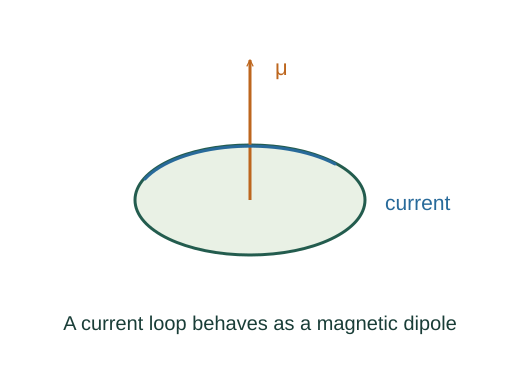

Derive orbital and spin magnetic-moment consequences
An orbiting charge q completes one circuit per period 2πr/v, giving I = qv/(2πr) and magnetic moment Iπr². Compare with orbital angular momentum mrv.
What the symbols mean
μB = eℏ/(2m): Bohr magneton; 𝐋: orbital angular momentum; 𝐒: intrinsic spin; m: electron mass.
When this applies
Nonrelativistic electron orbital motion and leading gspin = 2 approximation; slowly varying external magnetic field with a specified moment orientation.
Developing the argument

Model a circulating charge
An orbiting charge q completes one circuit per period 2πr/v, giving I = qv/(2πr) and magnetic moment Iπr². Compare with orbital angular momentum mrv.
State the independent spin input
Spin is intrinsic, not a literal charged rotating ball. Quantum theory supplies spin ½ and a leading gyromagnetic factor 2; more precise g differs slightly from 2.
Insert quantized projections
Using Lz = mℓℏ and Sz = msℏ gives the measured moment components in multiples of the Bohr magneton.
Differentiate orientation energy
For a fixed moment, U = −μzB(z). Force is minus its spatial derivative. The two orientations ±|μz| have energies separated by 2|μz|B.
A worked example
A spin-½ moment in a uniform field has two projection-dependent energies, while a field gradient can separate the corresponding beam components.
Derivation behind this calculation ↗A point to keep straight
The proton has a different gyromagnetic ratio. Do not substitute the electron Bohr magneton for a nuclear magnetic moment.
Check the assumptions and derivation ↗